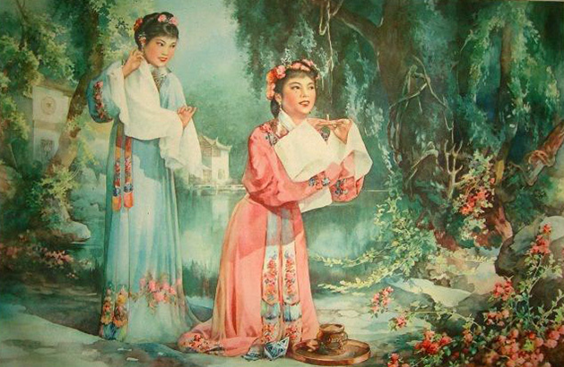
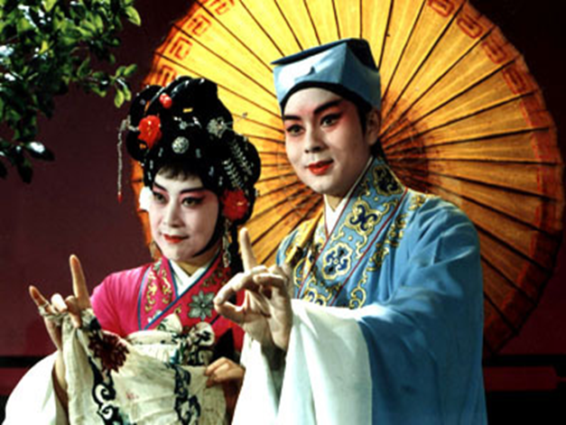

历史溯源
高抬戏剧目《踏伞》画面取材于宋元四大南戏“荆刘拜杀”之“拜”（《拜月记》）。此剧巧妙地从历史长河中撷取了一抹动人的情感片段，以细腻的笔触勾勒出一幅乱世情缘的画卷：故事聚焦于两位主角——王瑞兰与蒋世隆，他们本是两个世界的人，却因一场突如其来的灾难，命运之线被紧紧缠绕在一起。王瑞兰，一位温婉可人的女子，因战乱与家人失散，孤身一人，心中满是对未来的不确定与恐惧；蒋世隆，则是位有担当的青年，同样在逃难中与亲人冲散，内心同样承受着失去亲人的痛苦与迷茫。
在这风雨飘摇的时刻，两颗孤独的心意外相遇。王瑞兰鼓起勇气，轻声提出希望能与他结伴而行。然而，蒋世隆虽心生怜悯，却也深知男女授受不亲的古训，一时之间内心挣扎，只能婉言谢绝。
正当气氛略显尴尬之际，天空突然风云变幻，大雨倾盆而下。这突如其来的变故，让王瑞兰更加坚定了要与蒋世隆同行的决心。她不再犹豫，果断地抢过蒋世隆手中的雨伞，紧紧握住，仿佛那是她此刻唯一的依靠。她的动作中带着一丝决绝，也带着一丝不容拒绝的力量，那双清澈的眼眸中闪烁着坚定与信任的光芒。
这幅“抢伞”的画面，不仅成为了两人关系的转折点，更寓意着在困境中人们往往能够超越常规，勇敢地追求爱与希望。而《踏伞》这部高抬戏剧目定则格于王瑞兰请求和男孩做伴，抢住蒋世隆雨伞不放的画面，并借此深刻展现了人性中的光辉与美好，以及对美好未来的不懈追求。
演员及站位
在古老而典雅的高抬戏中，《踏伞》正缓缓拉开序幕，以其独特的艺术形式，讲述着一段缠绵悱恻的爱情故事。王瑞兰与蒋世隆两位角色的站位设计，更是巧妙地融合了传统与现代审美，将观众的目光紧紧吸引。
王瑞兰，这位剧中的女主角，身着华美的古装，衣袂飘飘，宛如仙子下凡。她站在高抬戏台的最高处，居高临下，不仅突显了她高贵典雅的气质，更以一种超凡脱俗的姿态，牢牢抓住了台下每一位观众的目光。王瑞兰的面容清秀，眼神中透露出淡淡的哀愁与期待，仿佛正等待着命运的安排，将她的心声传递给高抬桌下的每一个人。她的站位，不仅是对角色身份的象征，更是对女性柔美与坚韧的极致展现，让人不禁为之动容。
而在王瑞兰下方，蒋世隆，这位剧中的男主角，则以一种谦卑而深情的姿态站立。他身着朴素却整洁的衣衫，眼神坚定而温柔，抬头仰望上方的王瑞兰，眼中充满了爱慕与渴望。蒋世隆的站位虽低，却丝毫没有减弱他的存在感，反而通过他与王瑞兰之间的高低错落，营造出一种强烈的情感张力。他的一举一动，都透露出对王瑞兰深深的眷恋与不舍，仿佛在无声地诉说着他们的爱情故事。
这样的站位设计，不仅巧妙地利用了空间的高度差，增强了高抬戏的视觉效果，更通过角色的位置关系，巧妙地传达了两人之间复杂微妙的情感纠葛。王瑞兰在上，如同天空中的明月，清冷而遥远；蒋世隆在下，则如同地上的流水，温柔而执着。两者之间的距离，既是身份与地位的象征，也是情感与命运的考验。这样的布局，使得《踏伞》这一剧目在视觉上更加引人入胜，情感上更加深入人心，成为了高抬戏高抬桌上上的一道亮丽风景线。
动作神态
王瑞兰居高处，她双手轻舞水袖，水袖随着她的动作在空中划出一道道优美的弧线，如同流水般柔美而灵动，在舞动水袖的同时，她的眼神不时地向下望去，目光中充满了期待与渴望，希望能以此引起蒋世隆的注意，同意他们俩一起做伴。
蒋世隆在下面掌伞，脸上写满了复杂的情绪。他的眉头紧锁，眼神中既有对王瑞兰美貌的欣赏，也有对男女之别的顾虑与纠结。他的表情时而凝重，时而犹豫，仿佛在进行着激烈的思想斗争。思虑再三，终想到男女终究有别，十分纠结。
妆面服饰
高抬戏《踏伞》中，蒋世隆的妆面服饰被精心打造，尽显其书生本色，令人眼前一亮。他身着一袭剪裁得体的书生装扮，淡雅的色调与流畅的线条相互映衬，将他温文尔雅的气质衬托得淋漓尽致，举手投足间都透露着几分书卷气，仿佛是从古籍中走出的翩翩公子。他头戴一顶极为精致的花角巾，这角巾采用淡雅的色彩搭配，既不过分张扬，又不失文人特有的雅致，细腻的编织工艺更是令人赞叹不已，每一根丝线都仿佛在诉说着匠人的心血与巧思。花角巾轻轻搭在他的肩头，随风摇曳，为他平添了几分超凡脱俗的飘逸之感，使他看起来更加风度翩翩，宛如画卷中走出的仙人。
而他手中的那把雨伞，更是这出剧目中不可或缺的标志性物品，伞面绘有淡雅的山水图案，与蒋世隆的整体装扮相得益彰，既实用又富有诗意，仿佛能为他遮风挡雨的同时，也撑起了他心中的一片诗意天地。每当他轻轻摇动雨伞，那伞面上的山水仿佛也随之活灵活现，为整台高抬增添了几分灵动与雅致。
而王瑞兰的妆面服饰同样令人惊艳，她的头发被心灵手巧的梳妆师巧妙地编织成精致的发髻，高高挽起，既显得端庄大气，又不失女性的温婉与柔美。发髻间，一支精美的丹凤簪子熠熠生辉，那簪子以纯金打造，其上雕刻的丹凤形象栩栩如生，展翅欲飞，仿佛随时都能冲天而起，为她的整体造型增添了几分高贵与不凡。随着她的轻盈步伐，那丹凤簪子在阳光下闪烁着耀眼的光芒，将她衬托得更加光彩照人，宛如从梦中走出的仙子，令人心生向往。

